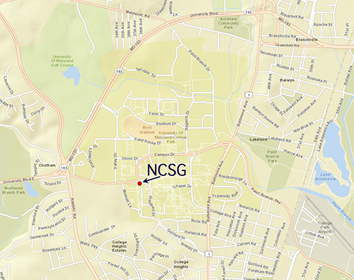

National Center for Smart Growth Research and Education (NCSG) University of Maryland (UMD) 1112 Preinkert Field House (map) College Park, MD 20742, USA Phone: +1 (301) 405-9424
You may also contact individual team members. |
 |
The National Center
for Smart Growth Research and Education is a non-partisan center for research and leadership training on smart growth and related land use issues in Maryland, in metropolitan regions around the nation, and in Asia and Europe.